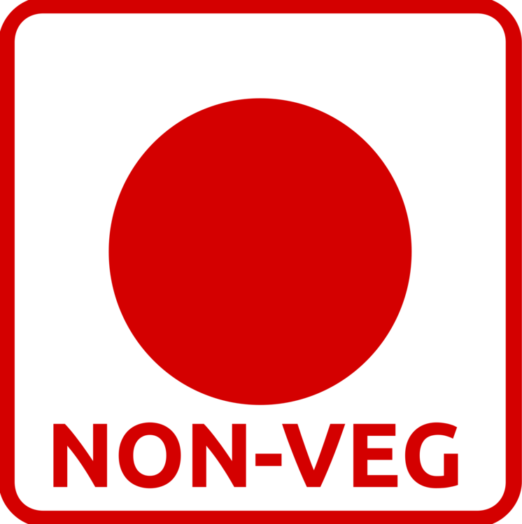

Non-Vegetarian's Heaven

Here you can find delightfully delicious, mouth-watering sugestions for Non Veg dishes.
If you are a Vegetarian this page is not for you ! Sorry
Error: You are 'veg', 'veg' not defined.
-
On top of the list of Non Vegetarian dishes Chicken is the first thing to come in our mind
-
-
When you want to have a spicy meal, Mutton can be an alternative
-
-
Want some SEAFOOD today ?
-